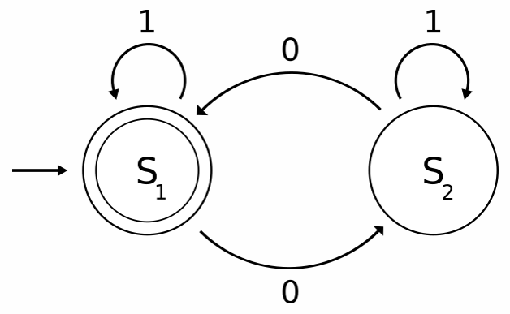

Graphviz — утилита командной строки для генерации схем графов на основе текстовых описаний узлов и рёбер. Из статьи вы узнаете, как и языка C++ программно вызвать graphiz с заданными параметрами, прочитать вывод и код возврата вызванной утилиты. Способ можно использовать в отрыве от Graphviz, здесь он взят для примера.
Чтобы получить graphviz на Windows, вам нужно:
Для Ubuntu потребуется:
После установки проверьте работу graphviz на простом примере:
digraph G {
0 [shape="circle"label="S0(a)"];
1 [shape="box"label="S1(b)"];
2 [shape="box"label="S2(c)"];
0->1 [label=" a "];
0->2 [label=" b "];
1->1 [label=" b "];
2->1 [label=" a "];
}
Для автоматизации нам потребуется кроссплатформенный способ запуска внешнего процесса из C++. Например, функции popen/pclose из стандарта POSIX.
На Windows название функции popen изменено на _popen. Это легко исправить с помощью препроцессора:
#ifdef _WIN32
#define popen _popen
#define pclose _pclose
#endif
Используя пример из документации (msdn.microsoft.com), можно реализовать функцию для запуска произвольной команды, печати вывода в консоль и возврата true/false при успешном/неуспешном выполнении.
#pragma once
#include <string>
class CUtils
{
public:
CUtils() = delete;
static bool RunProcess(std::string const& command);
};
bool CUtils::RunProcess(const std::string &command)
{
CPipeHandle pipe(popen(command.c_str(), "r"));
if (!pipe)
{
return false;
}
std::vector<char> buffer(256);
while (std::fgets(buffer.data(), int(buffer.size()), pipe))
{
std::fputs(buffer.data(), stderr);
}
if (std::feof(pipe))
{
return true;
}
// process run failed, print error.
std::fputs(std::strerror(errno), stderr);
return false;
}
Класс CPipeHandle — это простейшая безопасная обёртка над FILE*, в деструкторе которой автоматически вызывается закрытие канала через pclose.
namespace
{
class CPipeHandle
{
public:
CPipeHandle(FILE *pipe)
: m_pipe(pipe)
{
}
~CPipeHandle()
{
if (m_pipe)
{
pclose(m_pipe);
}
}
operator FILE*()const
{
return m_pipe;
}
private:
FILE *m_pipe = nullptr;
};
}
Чтобы воспользоваться API, нужно указать полную команду со всеми аргументами. Если путь к исполняемому файлу команды не добавлен в переменную окружения PATH, то придётся указать полный путь к .exe. Вот пример вызова Graphviz для преобразования диаграммы fsm.dot в изображение fsm.png
CUtils::RunProcess("dot -Tpng -ofsm.png fsm.dot");
Допустим, нам захочется сделать сериализацию дерева или графа в язык Graphviz, чтобы автоматизировать их визуализацию. Допустим, мы хотим визуализировать конечный автомат:

На выходе мы должны получить примерно такой файл *.dot:
digraph G {
0 [shape="circle"label="S0(a)"];
1 [shape="box"label="S1(b)"];
2 [shape="box"label="S2(c)"];
0->1 [label=" a "];
0->2 [label=" b "];
1->1 [label=" b "];
2->1 [label=" a "];
}
В файле указаны надписи на вершинах и рёбрах графа, где под вершинами подразумеваются состояния, а под рёбрами — переходы. Для вершин указана форма: для начального состояния круг (circle), для конечных состояний (терминалов) двойной круг (doublecircle), для промежуточных состояний (нетерминалов) прямоугольник (box).
Вспомогательный класс для сериализации назовём CDotWriter. Определение класса:
enum class StateType
{
Initial,
Nonterminal,
Terminal
};
class CDotWriter
{
public:
CDotWriter(std::ostream & out);
~CDotWriter();
void PrintVertex(size_t index, std::string const& label, StateType type = StateType::Nonterminal);
void PrintEdge(size_t from, size_t to, std::string const& label);
private:
std::string GetShape(StateType type)const;
std::ostream & m_out;
};
Реализации методов выглядят так:
CDotWriter::CDotWriter(std::ostream &out)
: m_out(out)
{
m_out << "digraph G {\n";
}
CDotWriter::~CDotWriter()
{
m_out << "}\n";
}
void CDotWriter::PrintVertex(size_t index, const std::string &label, StateType type)
{
m_out << index << " [";
m_out << "shape=\"" << GetShape(type) << "\"";
m_out << "label=\"" << label << "\"];\n";
}
void CDotWriter::PrintEdge(size_t from, size_t to, const std::string &label)
{
m_out << from << "->" << to << " [label=\" " << label << " \"];\n";
}
std::string CDotWriter::GetShape(StateType type) const
{
switch (type)
{
case StateType::Initial:
return "circle";
case StateType::Nonterminal:
return "box";
case StateType::Terminal:
return "doublecircle";
}
return std::string();
}